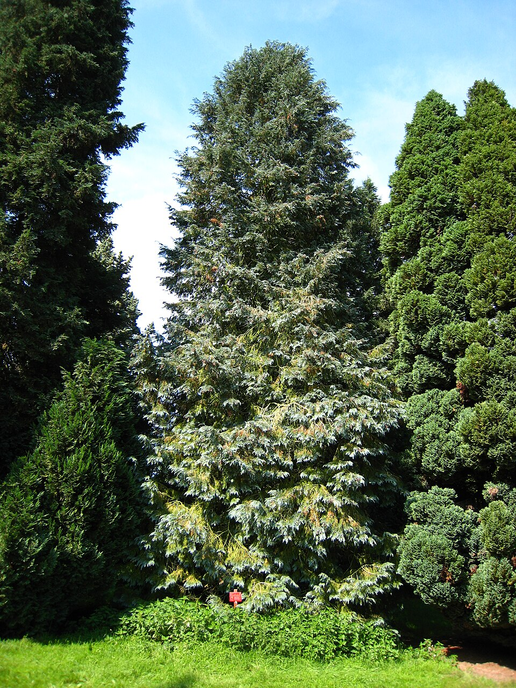
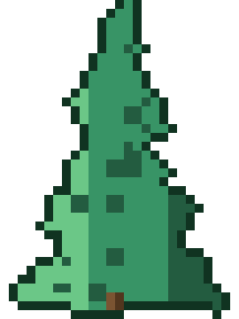

Chamaecyparis — False cypress (Chamaecyparis)
A cathedral-builder that has stood since the Roman Empire fell — slow-growing, immovable, and still standing when everything around it has crumbled to dust.
Combat flavor
Massive, ancient, and near-indestructible — the Juggernaut archetype fits perfectly: slow attack speed but colossal hit points and armour, reflecting millennia of growth. Its aromatic wood could fuel a passive "insect repel" debuff that reduces enemy swarm-type units' effectiveness in range.
Real-world facts
Typical / max height20–40 m typical; up to 70 m for the largest species (Formosan cypress C. formosensis); Hinoki (C. obtusa) reaches 35 m in the wild
LifespanExceptionally long-lived; C. lawsoniana individuals documented to 1,755 years; some Formosan specimens estimated at 2,000+ years; among the longest-lived conifers in temperate climates
WoodHinoki (C. obtusa) air-dry density ~440 kg/m³; moderately light but very durable and aromatic; prized in Japan for shrine and palace construction; C. lawsoniana (Port Orford cedar) somewhat denser; generally soft-to-medium hardness for conifers
Growth speedSlow (Hinoki adds ~30 cm/year; very slow on nutrient-poor soils)
Ecology / notable traits7–8 species native to North America and East Asia; Hinoki is the most important commercial timber tree in Japan — used for Ise Grand Shrine rebuilds every 20 years; C. lawsoniana (Lawson's cypress) is invasive in parts of western Europe as an ornamental escape; highly aromatic wood deters insects (natural preservative); no thorns or significant toxicity; globally notable due to restricted natural ranges and cultural significance; some species threatened by Phytophthora lateralis root rot
Gallery

